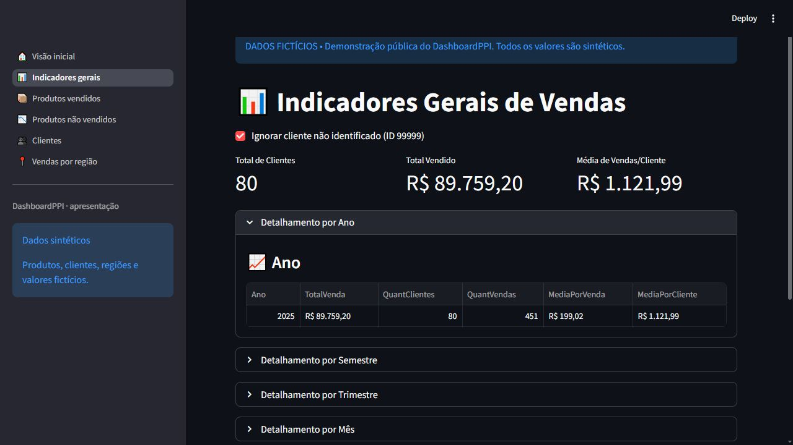
DashboardPPI
Capturas da interface, gráficos para slides e um diagrama de arquitetura para apresentar o projeto.
Todos os dados exibidos são fictícios. Produtos, clientes, regiões, números e tendências foram gerados do zero. Não são estatísticas nem registros anonimizados do conjunto comercial.
Capturas da aplicação
As páginas originais foram executadas em uma demonstração separada com dados sintéticos. Formato JPG, 1280 × 720.

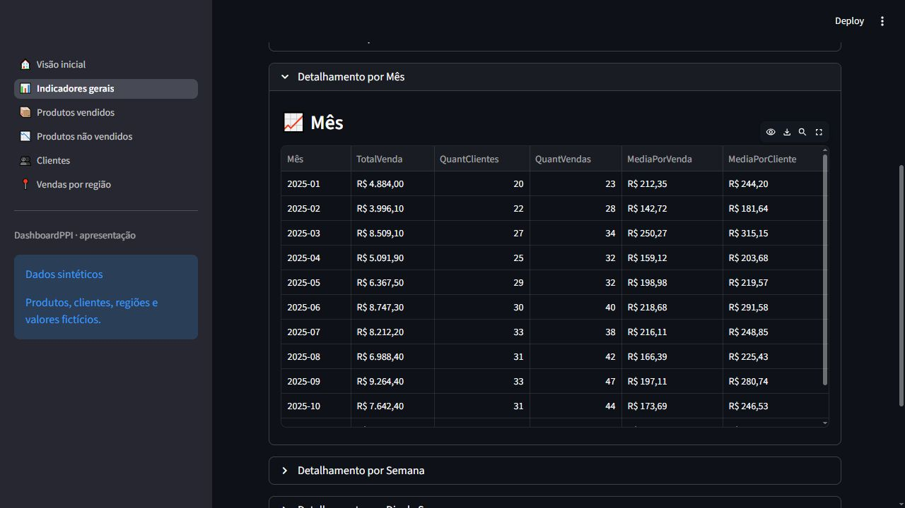
Interface · detalhamento mensal

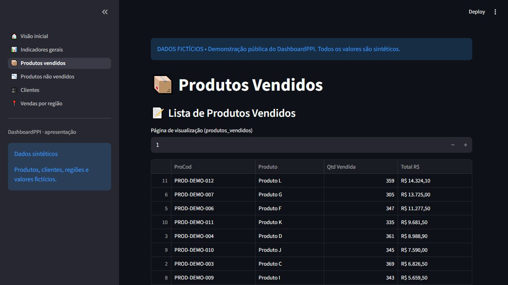
Interface · produtos vendidos

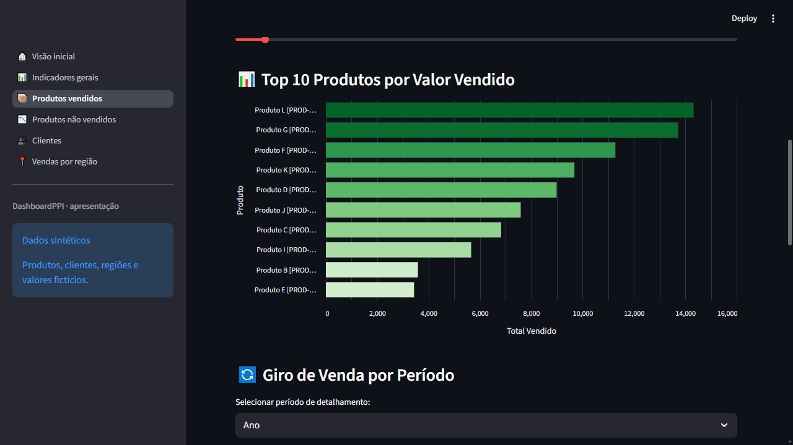
Interface · gráfico de produtos

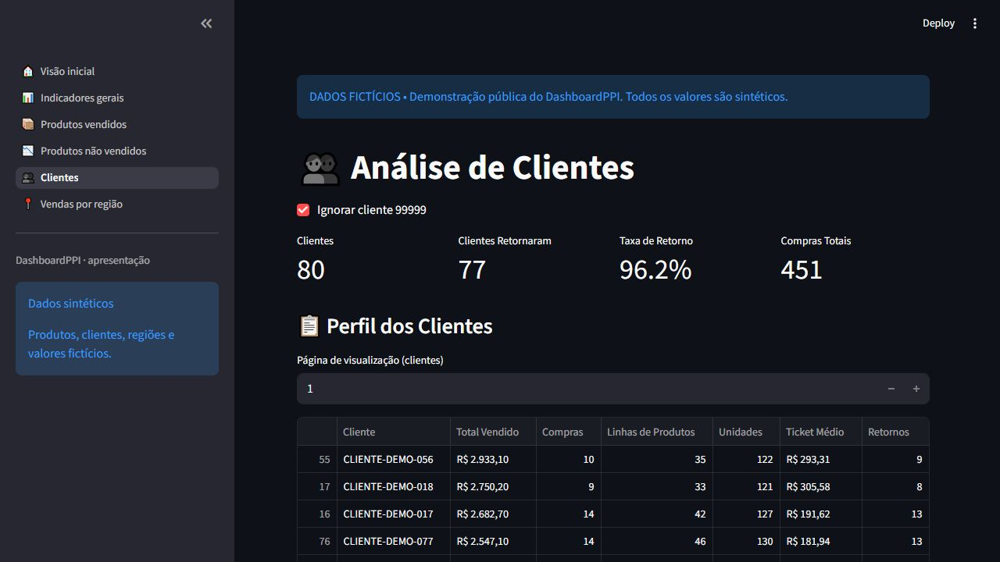
Interface · análise de clientes

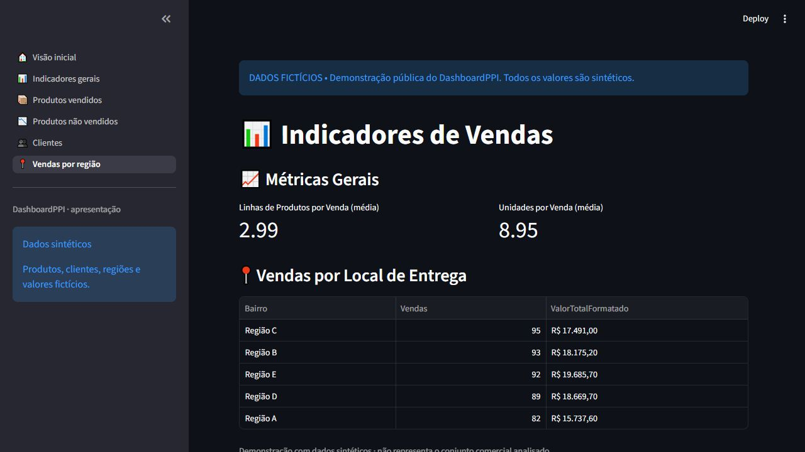
Interface · vendas por região

Gráficos para slides e arquitetura
PNG em 1920 × 1080 e SVG vetorial. Gráficos avulsos preparados para apresentação; não são capturas de telas adicionais da aplicação.
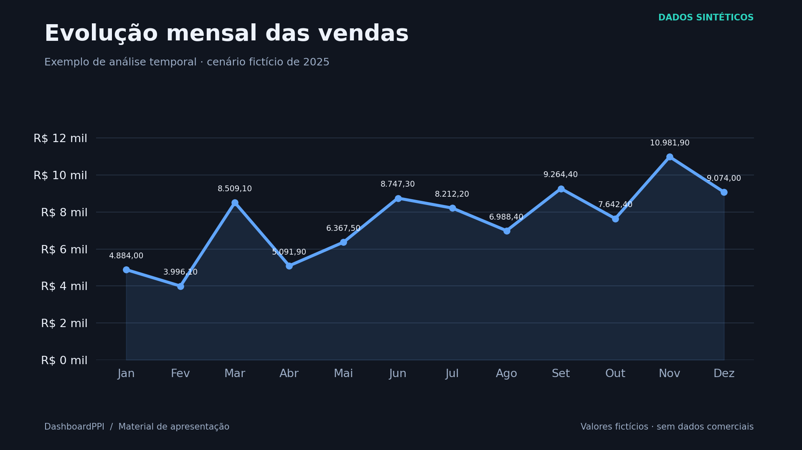
Evolução mensal das vendas


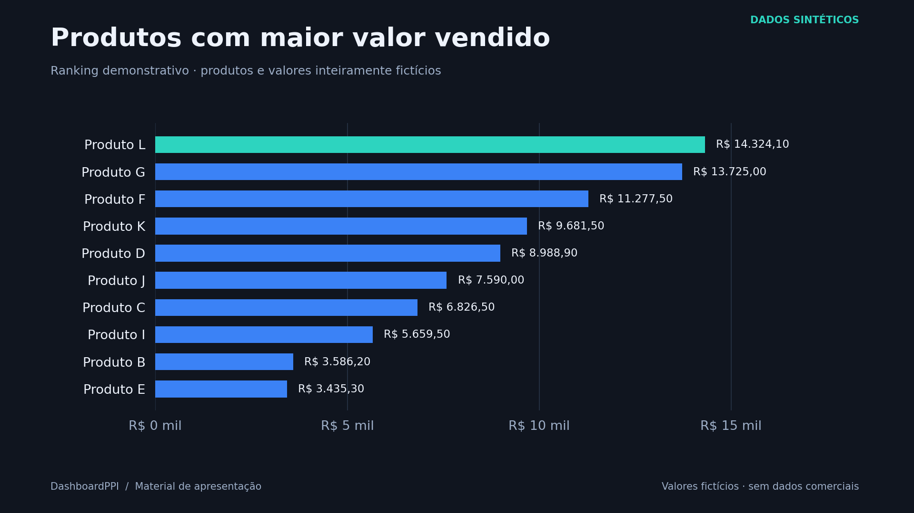
Ranking de produtos


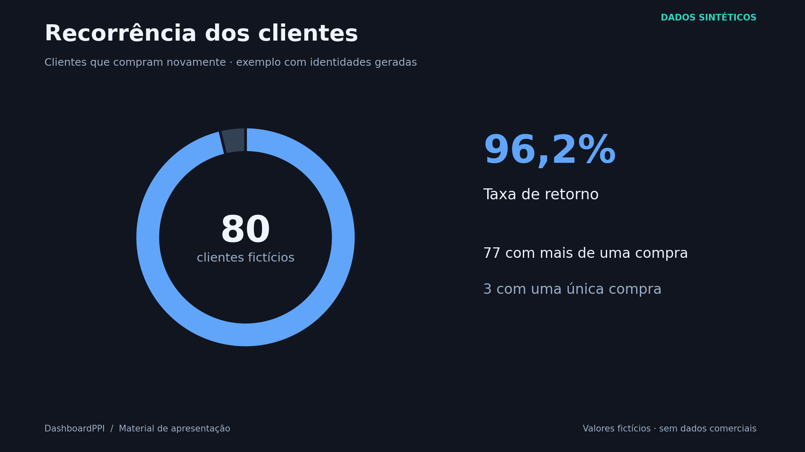
Recorrência dos clientes


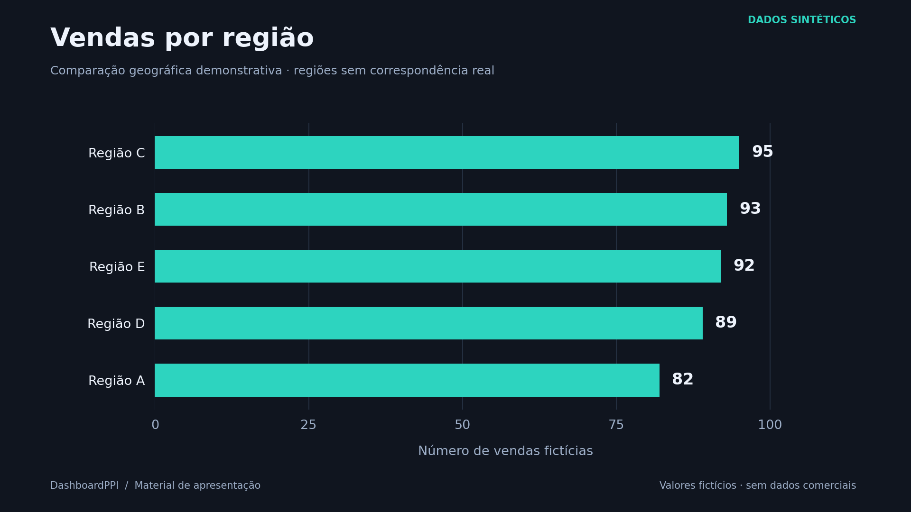
Vendas por região


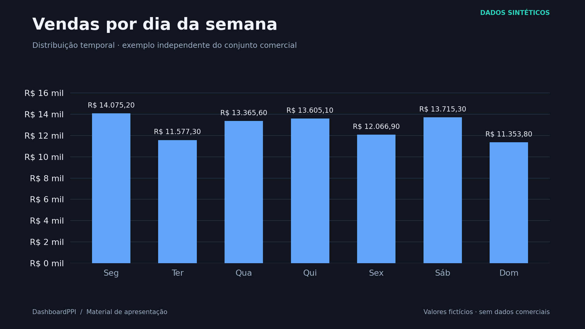
Vendas por dia da semana


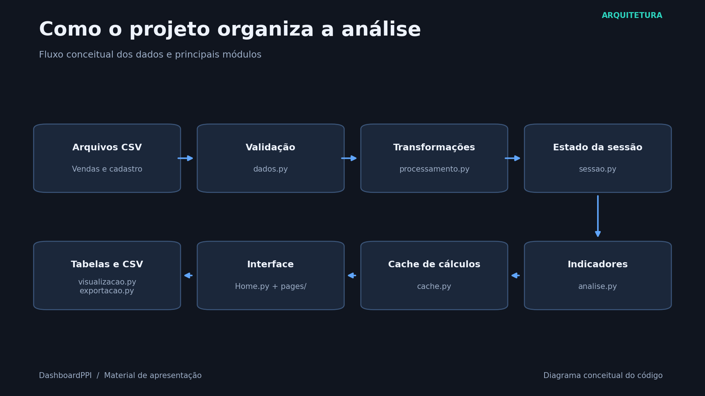